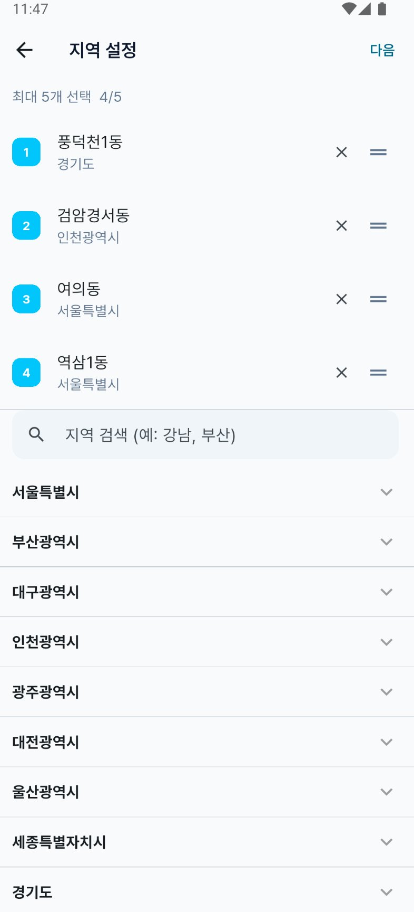
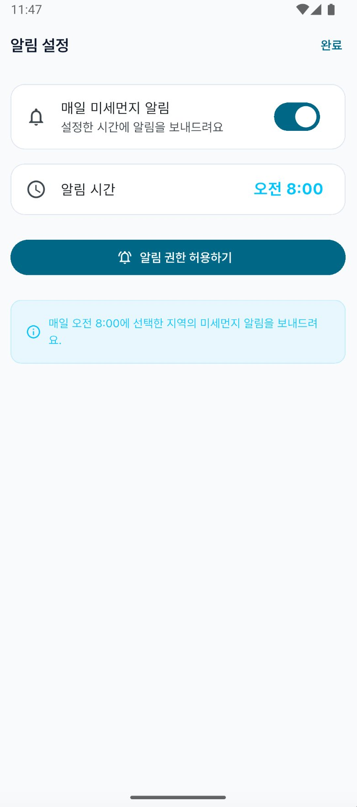
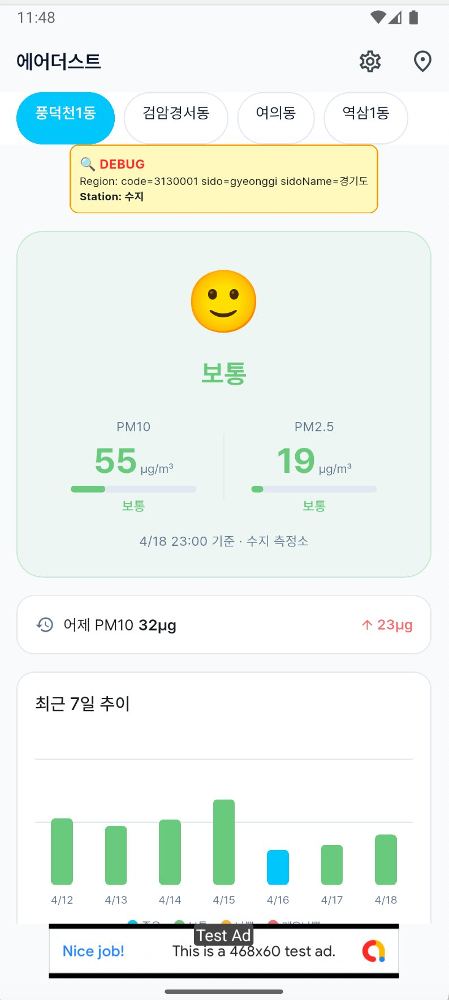
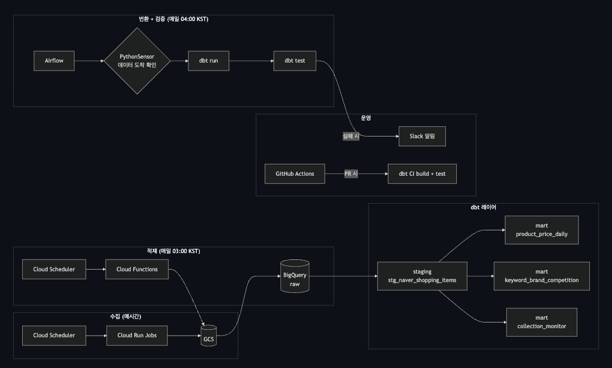

데일리 리포트 작성 자동화 BAT
수기 작성 프로세스를 Python으로 전환. 팀원들의 반복 업무 시간을 90% 이상 줄였습니다.
디지털 마케터 · 데이터 분석가 · 영업기획으로 만 6년.
숫자로 비즈니스 성장을 증명하고, 코드로 업무 방식을 바꿔왔습니다.
이제 그 경험을 채널톡 AX에서 이어 나가고 싶습니다.
저는 스스로를 "데이터 분석을 기반으로 한 비즈니스 개발에 관심이 많은 사람"이라고 소개해왔습니다. 5곳의 직장, 5가지 직무를 거치면서도 기저에 깔려 있던 관심사는 항상 같았다고 말할 수 있는 이유입니다.
이 관심은 실무에서 그치지 않았습니다. 49명의 이커머스 초기 사업자분들께 3회차 강의를 진행하며 '커머스 비즈니스 프로세스', '고객 구매 여정', '검색광고 운영'을 5단계로 구조화해 설명했고, 총평 4.6/5을 받았습니다. 복잡한 비즈니스를 구조화하고, 실행으로 옮기는 일. AX Consultant가 하는 일의 축소판을 그때 이미 해봤던 셈입니다.
그리고 지금, AI가 그 모든 걸 산업혁명급 속도로 재편하고 있습니다. 그 변화의 가장 예리한 접점은 고객과 기업이 만나는 순간 — 상담과 운영의 현장이라고 봅니다.
채널톡이 만들고 있는 건 단순한 CS 툴이 아니라, 기업이 고객을 이해하는 방식 자체를 AI로 재설계하는 플랫폼이라고 읽었습니다. 그 여정에 설계자로 합류하고 싶습니다.
4개 회사를 거치며 일관되게 추구한 한 가지 — 데이터로 비즈니스를 성장시키는 것.
AI와 자동화는 개념으로만 아는 게 아닙니다. 실무에서 시간과 비용을 실제로 줄여본 경험들입니다.
수기 작성 프로세스를 Python으로 전환. 팀원들의 반복 업무 시간을 90% 이상 줄였습니다.
수백 개 광고 중 이슈 발생 상품만 자동으로 탐지하여 광고 OFF까지 연결. 낭비 예산을 원천 차단.
유저 웹로그(implicit data) 기반 개인별 상품 추천 모델을 직접 개발. 단일 CRM을 개인화된 LMS CRM으로 전환 제안.
반복 작업을 자동화 스크립트로 전환. "반복 작업으로 인한 병목 및 아이디어 한계 해소"를 스스로 증명한 사례.
제가 AI를 쓰면서 스스로 감탄했던 순간들입니다.
"AI의 확장성은 엄청나구나. 머지않아 AI 활용 능력이 곧 시장 지배력이 되겠구나" 라는 확신이 들었습니다.
A4를 64등분한 종이에 5종류 펜으로 총 320장 직접 제작. 이진화 threshold, dilate/erode 커널, ROI crop까지 3번의 iteration으로 성능을 28%p 끌어올린 경험. 모델보다 전처리와 문제 정의가 더 중요하다는 걸 몸으로 배운 프로젝트.
"자율주행에 필요한 기능을 직접 구현해보고 싶다"는 호기심 하나로 YOLO 아키텍처를 공부하고 구현한 프로젝트. 모델이 실제로 작동하는 순간 느꼈던 "AI로 이런 것까지 가능하구나"라는 충격이 지금까지의 모든 학습의 출발점이 되었습니다.
AI로 기획 → 개발 → 배포까지 혼자 가능하다는 걸 직접 증명하는 프로젝트. 지역 설정, 알림 시간 커스터마이즈, 7일 추이 시각화까지 — "AX팀이 하고 싶어 하는 일을 일상에서 이미 구현해보고 있습니다"



데이터 파이프라인과 시스템을 Claude Code로 대화하면서 구현·디버깅·디벨롭하는 경험이 충격적이었습니다. 이게 앞으로 모든 일의 기본 방식이 될 것이라는 확신이 들었습니다. — 이 지원서 페이지조차 Claude Code로 만들고 있습니다.

매일 새벽 수집·검증·적재되는 네이버 쇼핑 데이터 파이프라인 — Cloud Functions, BigQuery, dbt, Airflow를 Claude Code와 대화로 구성했습니다.
막연한 포부가 아닌, 지금까지의 경험을 그대로 잇는 다음 장의 이야기입니다.
업무 자동화로 팀원들이 감탄하고 본질에 집중하던 모습을 볼 때의 짜릿함을, 이번엔 고객사 현장에서 AI라는 훨씬 큰 지렛대로 다시 만들고 싶습니다.
AI가 고객사의 비즈니스 성장의 지렛대가 되도록. 고객사와 함께 업무 자체를 AI로 재설계하는 역할을 앞서 수행하고 싶습니다.
영어로 비즈니스 소통이 가능합니다. 채널톡의 글로벌 진출에 AX팀원으로 기여하고 싶습니다.
고객상담 도메인의 '팔란티어' —
그 여정에 합류하고 싶습니다.
과제나 인터뷰 요청은 언제든 환영합니다. 준비되어 있습니다.